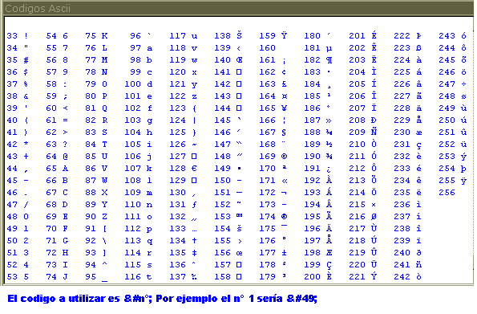
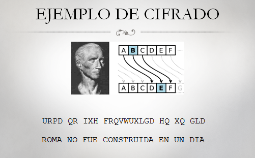

La clave para el Cifrado César sera un número entre 1 y 26. A menos que conozcas la clave (es decir, conozcas el número usado para encriptar el mensaje), no podrás desencriptar el código secreto. El Cifrado César fue uno de los primeros sistemas de cifrado que se inventaron. Con este cifrado, para encriptar un mensaje se toma cada letra del mismo (en criptografía, estas letras se llaman símbolos porque pueden ser letras, números o cualquier otro signo) y se la reemplaza con una letra "desplazada". Si desplazas la letra A un espacio, obtienes la letra B. Si desplazas la A dos espacios, obtienes la letra C.
Como implementamos este cambio de letras en un programa? Podemos hacer esto representando cada letra como un número llamado ordinal, y luego sumando o restando a este número para formar un nuevo ordinal (y una nueva letra). ASCII (que se pronuncia "asqui" y corresponde a las siglas en inglés de Código Estándar Americano para el Intercambio de Información) es un código que relaciona cada caracter con un número entre 32 y 126.Las mayúsculas de la "A" a la "Z" reciben números ASCII entre 65 y 90. Las minúsculas de "a" a "z" reciben los números ASCII entre 97 y 122. Los caracteres numéricos de "0" a "9" reciben números ASCII de 48 a 57. Las computadoras modernas usan UTF-8 en lugar de ASCII. Pero UTF-8 es compatible con ASCII, de modo que los ordinales UTF-8 para los caracteres ASCII son los mismos que los ordinales ASCII.
 